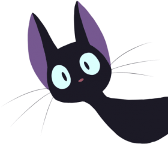

Whiskers was a playful cat who loved to explore.
On a gloomy evening, as he lay in the garden, he spotted a colorful butterfly dancing in the air.
Its wings were a brilliant blue and yellow, fluttering like tiny flags in the wind.
Whiskers couldn't resist the urge to follow it.
